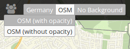

BaseSourceSwitcher (Themenwechsel)¶
Mit diesem Element kann zwischen vordefinierten Themen (BaseSources) z.B. Hintergrundkarten gewechselt werden. Über Buttons kann zwischen den Themen gewechselt werden. Es kann dabei immer nur ein Thema aktiv sein.
Zu jeder Datenquelle kann eine Gruppe definiert werden. Alle Definitionen einer Gruppe werden als Dropdown-Liste angezeigt, wobei der Gruppenname als übergeordneter Eintrag erscheint.
{kind=link}
Konfiguration¶
Die Konfiguration geschieht in zwei Schritten:
- Erzeugen eines Elements zum Wechseln der vordefinierten Themen (Titel, Tooltip und Target)
- Hinzufügen von Themen mit einer oder mehrerer Quellen und optionaler Definition einer Gruppe
{kind=link}
- Title: Text, der neben dem About Dialog Button angezeigt wird.
- Tooltip: Text, der erscheint wenn der Mauszeiger längere Zeit über dem Button gehalten wird.
- Target: Zielelement (Titel(ID)) des Buttons, das bei Anklicken des Buttons ausgelöst wird.
- Instances: Themengruppen, die untergeordnete Themenkarten enthalten und als übergeordneter Gruppenname in der Toolbar erscheinen
In dem Konfigurationsbeispiel sieht man, dass entweder ein, kein oder mehrere Einträge pro Instanceset gewählt werden kann. Durch eine Group-Angabe können Gruppen gebildet werden, die dann über die Dropdown-Liste zusammengefasst werden.
- Title: Name der Themenkarte
- Group: Optionale Zuweisung zu einer vorher definierten Themengruppe
- Instances: Quellen für die Themenkarte
YAML-Definition:¶
title: # Titel
tooltip: # Text des Tooltips
target: map # ID des Kartenelements
sourcesets: # Liste der Sourcesets.
- { title: sourcesetname, group: groupname,
sources: [sourceId]} # sourceset: Titel,
# group: (optional) Gruppenname der Gruppen der Sourcesets über "group name"
# sources Liste der Sources
Class, Widget & Style¶
- Class: Mapbender\CoreBundle\Element\BaseSourceSwitcher
- Widget: mapbender.element.basesourceswitcher.js
HTTP Callbacks¶
Keine.
JavaScript API¶
Keine.
JavaScript Signals¶
Keine.